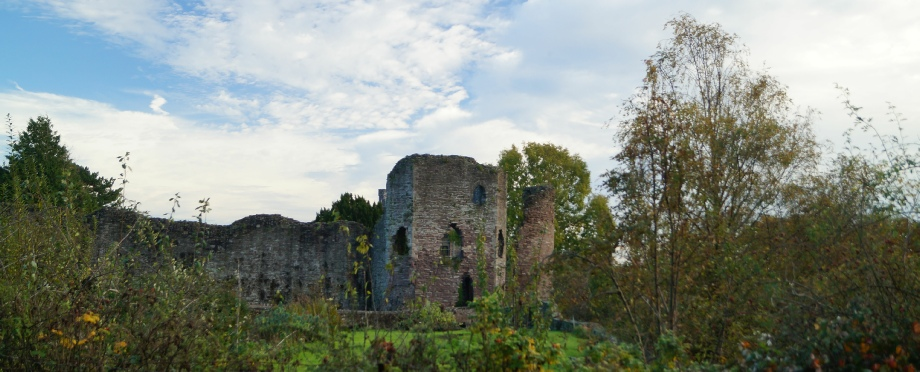
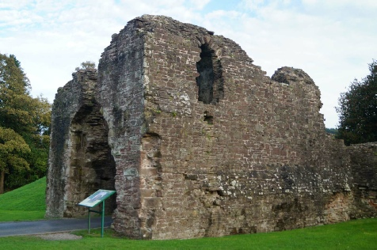

ABERGAVENNY CASTLE, NP7 5EE
GETTING THERE
Postcode: NP7 5EE
Lat/Long: 51.8198N 3.0176W
Notes: Castle is reasonably well sign-posted but easy to find in central Abergavenny. Car parking is available nearby (pay and display).
WHAT IS THERE TO SEE?
The castle is in ruins although the ruins are significant including the 1400 Gatehouse (pictured left). Abergavenny museum, located in the Victorian building on top of the motte, is also well worth a visit.
VISIT OFFICIAL SITE (Opens in new window)
Castle is run by Monmouthshire County Council .
ADDITIONAL NOTES
1. The massacre of the Welsh Lord, Seisyll, took place around Christmas Day 1175. Both Seisyll and his eldest son, Geoffrey, attended along with numerous other prominent native Welsh figures. Surrendering their arms upon arrival at the castle, they were cut down. William de Braose then dispatched men to murder Seisyll's younger son, Cadwalladr.
A Norman fortification built to ensure control of Monmouthshire, Abergavenny Castle was scene to the Christmas Day massacre of the native Welsh Lord, Seisyll ap Dyfnwal. Attacked multiple times by Welsh forces, including during the Owain Glyn Dwr rebellion, it was slighted in the latter days of the Civil War.
HISTORY OF ABERGAVENNY CASTLE
Abergavenny Castle was built by Hamelin de Ballon around 1087 to a traditional motte-and-bailey configuration. Initially timber, rebuilding in stone starting as early as 1100. By 1175 the castle was in the hands of William de Braose who sought to eliminate his Welsh rival in the area - Seisyll ap Dyfnwal, Lord of Upper Gwent. Inviting Seisyll and other prominent Welsh who opposed the Norman incursions to Abergavenny allegedly for reconciliation, he had them killed in the Great Hall. The English King, Henry II, attempted to defuse the situation by imposing sanctions on William de Braose but this did not stop an attack on Abergavenny. In 1182 Hywel ap Iorwerth, lord of Caerleon, sent forces to strike at Dingestow and Abergavenny Castles causing much destruction. The damage done was sufficient to warrant a significant rebuilding programme. From 1190 onwards the Keep, curtain walls and associated towers were constructed.
Further upgrades were made to the castle in the thirteenth century and another significant rebuild occurred after a combined attack by Richard Marshall, Earl of Pembroke and the Welsh Princes in 1233. Upgrades continued into the early fourteenth century but then, with the increasing peace following Edward I's conquest, stalled. The last major addition, the Barbican Gatehouse, was built around 1400 probably prompted by the rebellion of Owain Glyndŵr.
During the Civil War the castle survived undamaged until 1645 and was garrisoned for the King. But as Royalist fortunes waned, Charles I ordered its destruction to prevent it falling into the hands of Parliamentary forces. The ruined remains where then plundered for the stone. The building on top of the motte today, a Victorian structure dating to 1818, was originally a hunting lodge for the Marquess of Abergavenny but now houses a local museum.
© Copyright 2016 | Terms and Conditions (inc Cookie Policy) | Contact Us
Recovered original photographs

